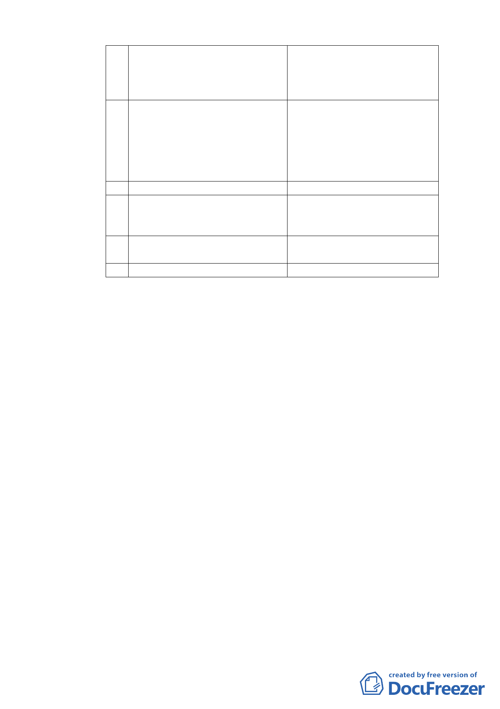

B 鮮花、禮品
C 茶葉及茶具
D 種子、園藝及其用品
E 瓷器、陶器、搪器
5 第21組：飲食業。本組限於營 A 點心店
業樓地板面積不超過 150 平 B 飲食店
方公尺之下列各款：
C 泡沫紅茶店
D 餐廳（館）
E 咖啡館
F 茶藝館
6 第22組：餐飲業（不含酒店）
7 第49組：農藝及園藝業
A 農作物種植物
B 花圃、溫室、苗圃及果園
C 造林
8 第50組：農業及農業建築 A 農業倉庫及農舍
B 休閒農業之相關設施
9 第51組：公害最輕微之工業 A 製茶業
2. 土地使用強度
（1） 本計畫區內之建蔽率不得超過15%，其中主建物建
蔽率不得超過10%，涼亭部分不得超過5%，涼亭部
分之興建應符合「臺北市山坡地開發建築要點」及
水土保持相關規定辦理。
（2） 本案基地中主建物建築面積合計不得超過165平方
公尺。建築物之高度不得超過10.5公尺，樓層不得
超過3層樓。
（3） 本案申請開發許可範圍內不適用其他有關容積獎
勵相關法令之規定，且不得移入容積。
（4） 本計畫區建築基地因地形限制或無停車需求時，經
「臺北市都市設計及土地使用開發許可審議委員
會」審議同意後，得酌予調整設置停車空間及裝卸
位。
五、 全案係市府101年4月27日府都規字第10110616200號公告公
開展覽並函送到會，本案申請人係依市府97年3月19日府都
綜字第09701148400號公告「變更臺北市文山區指南里、老
- 10 -